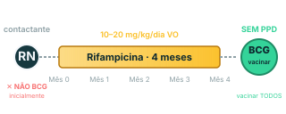

A conduta padrão é vacinar BCG no berçário. No RN contactante, a ordem inverte: 4 meses de rifampicina primeiro, BCG depois. Matar o bacilo selvagem antes que a imunidade neonatal feche um foco latente.
Conceito
RN contactante de bacilífera — conduta invertida
RN contactante de mãe (ou outra fonte) bacilífera tem conduta diferente do RN padrão:
NÃO vacinar BCG inicialmente (inverte a regra das primeiras 12 horas de vida);
Fazer quimioprofilaxia primária com rifampicina por 4 meses;
Dose: 10–20 mg/kg/dia VO; MS padroniza 15 mg/kg/dia como dose central;
Administrar preferencialmente em jejum (1 h antes da mamada);
Monitorização: avaliação clínica + crescimento mensal; função hepática só se sintomas (raro em RN sem comorbidade).

Mecanismo
Por que rifampicina ANTES de BCG
Imunidade neonatal é imatura — granuloma forma lentamente, bacilo selvagem pode disseminar antes da contenção;
BCG protege contra formas graves disseminadas (miliar e meníngea) em < 5 anos — mas NÃO previne infecção pelo bacilo selvagem;
Sequência rifampicina → BCG: a rifampicina elimina o bacilo selvagem antes que a imunidade neonatal forme um granuloma frágil e foco latente persistente; depois a BCG cria a proteção contra formas graves pra os próximos anos.
Inverter a ordem (BCG primeiro) deixaria o bacilo selvagem livre pra disseminar enquanto a imunidade reagiria contra a cepa vacinal — proteção certa contra o alvo errado, no momento errado.
Prova · atualização recente
Pós-quimioprofilaxia: vacinar TODOS com BCG, SEM fazer PPD prévio
Atualização confirmada pelo Manual MS-TB 2024. A regra antiga exigia PPD antes da BCG (não vacinar se reator, pra evitar reação local acentuada). A simplificação atual: vacinar todos, sem PPD prévio.
Razões:
Baixa probabilidade de PPD reator em RN < 6 meses — imunidade celular ainda imatura;
Custo-benefício alto da BCG protegendo formas graves nos próximos anos;
Risco de reação local acentuada pós-BCG em RN reator é manejável e relativamente raro nessa faixa etária.
Ponto de alta densidade em prova MED.
Alerta · inversão crítica
NÃO confundir a ordem
RN padrão (sem contato com bacilífera): BCG nas primeiras 12 horas de vida (ou até 30 dias);
RN contactante de bacilífera: NÃO BCG inicialmente → quimioprofilaxia primária (rifampicina 4 meses) → BCG no final.
Inverter essas ordens é erro grosseiro frequentemente cobrado em prova MED.
Conceito complementar
BCG protege contra formas graves — não contra infecção
A BCG NÃO previne infecção primária por M. tuberculosis nem TB pulmonar adulta. A função protetora reconhecida e clinicamente relevante é prevenir formas disseminadas (miliar e meníngea) em crianças < 5 anos.
Detalhamento operacional completo (calendário, técnica, eventos adversos, contraindicações) na página seguinte do módulo. Referência cruzada A2 (BCG no escore CHILD e na TB miliar).
Recuperação ativa · 1
Por que o RN contactante de bacilífera não recebe BCG inicialmente? Qual a conduta correta e em qual ordem?
Porque a imunidade neonatal é imatura e a BCG não previne infecção pelo bacilo selvagem — protege apenas contra formas graves (miliar e meníngea) em < 5 anos. Se o RN recebe BCG enquanto está exposto a bacilo selvagem ativo, a imunidade vacinal reage contra cepa atenuada enquanto o bacilo selvagem pode formar um foco latente.
Conduta correta, em ordem:
NÃO vacinar BCG no nascimento;
Quimioprofilaxia primária: rifampicina 10-20 mg/kg/dia VO (MS: 15 mg/kg/dia central) por 4 meses;
Ao final dos 4 meses: vacinar com BCG, sem fazer PPD prévio (atualização Manual MS-TB 2024).
A rifampicina elimina o bacilo selvagem antes que se forme foco latente; depois a BCG cria proteção contra formas graves pra os próximos anos.
Recuperação ativa · 2
Por que rifampicina antes de BCG no RN contactante e não o oposto?
Pela diferença de alvo entre cada intervenção:
Rifampicina mata o bacilo selvagem que pode estar circulando no RN exposto;
BCG induz resposta imune contra a cepa vacinal atenuada de M. bovis — NÃO contra o bacilo selvagem.
Se BCG fosse primeiro:
A imunidade neonatal imatura monta resposta lenta contra a cepa vacinal;
Nesse intervalo, o bacilo selvagem (já presente pela exposição) tem tempo de formar granuloma frágil e foco latente persistente;
Resultado: proteção contra formas graves pelas próximas décadas, mas com bacilo selvagem dormente dentro — risco aumentado de TB ativa quando a imunidade flutuar.
A sequência inversa (rifampicina → BCG) elimina o bacilo selvagem antes da imunidade formar foco latente, e depois cria a proteção vacinal pra formas graves no futuro. Faz cada intervenção atacar o alvo certo no momento certo.
Recuperação ativa · 3
Pós-quimioprofilaxia, vacinar com BCG — precisa de PPD antes? Por quê?
Não. Manual MS-TB 2024 simplificou a conduta: pós-quimioprofilaxia no RN, vacinar todos com BCG sem PPD prévio.
A regra antiga exigia PPD antes da BCG — se PPD reator, não vacinar (risco de reação local acentuada). A simplificação atual descartou esse passo por 3 razões:
Baixa probabilidade de PPD reator em RN < 6 meses — imunidade celular ainda imatura, raramente sensibilizada o suficiente pra dar reação ≥ 5 mm;
Custo-benefício alto da BCG protegendo formas graves (miliar/meníngea) nos próximos anos — perder essa proteção por causa de um PPD reator borderline não compensa;
Risco de reação local acentuada pós-BCG em RN reator é manejável (úlcera maior, expectante; raramente complica).